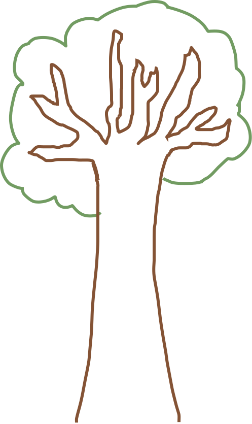
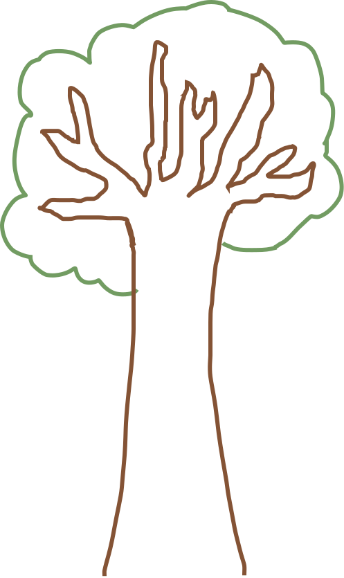

I Love Web gardening
Experiment met eigen font:
Via Calligraphr heb ik een template gedownload en geprint. Vervolgens alle letters geschreven en het formulier ingescand en geupload naar de website. Dan wordt je handschrift gedigitaliseerd en kun je nog een aantal wijzigingen doorvoeren. Dan kun je je font genereren en downloaden als 'ttf' bestand.
 
